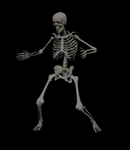

Now, while you may think that this is exactly the same as Media, that would only be around 43% correct.
For while skeletons in shows, movies, and general media, they are precived as these terrifing creatures of the night
they are just kinda silly.

From their goofy poses because they don't have muscles, their faces with or without eyes, and just their general aura, they the embodiment of being
Goofy
Wacky
perhaps even
Crazy